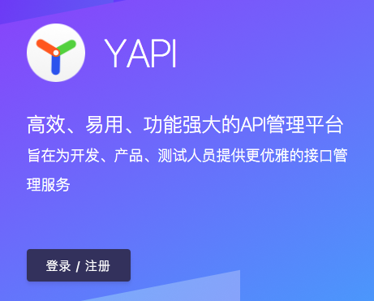
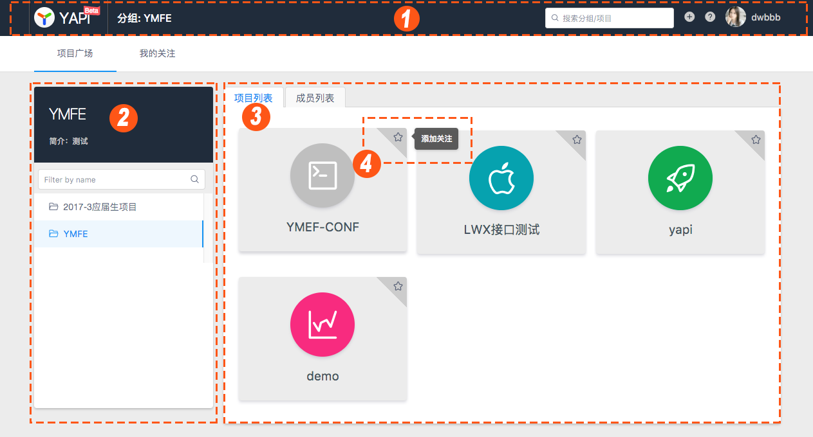
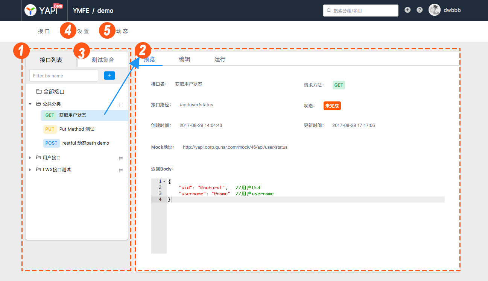
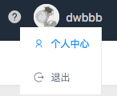
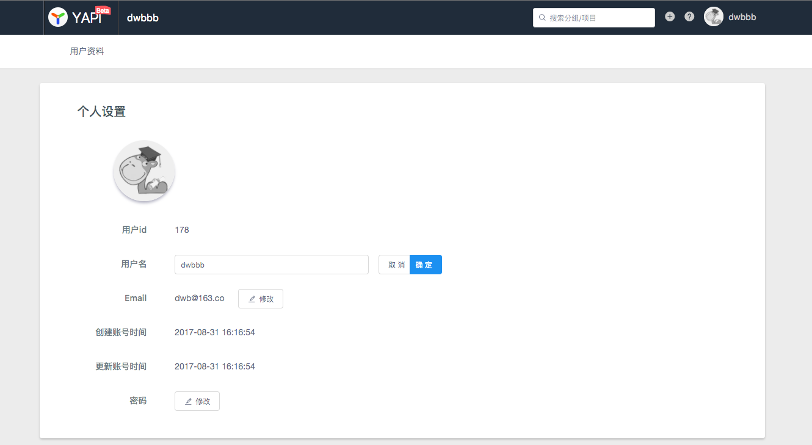

随着开发的推进，各种各样的文档会接踵而来，比如：需求文档、架构文档、接口文档等等，我们通过 SVN、Git 等可以很方便的管理，面对需求的不断变化，我们需要不断的对各类文档进行维护。但在开发阶段，针对接口文档而言，其具有不确定性、难维护、难测试等特点，接口的管理往往成为了难题。
今天我们带着 API 接口管理的问题，一起来看看一款可视化接口管理平台 YApi，它是如何能够轻松帮助我们搞定 API 的管理问题。
YApi 介绍
YApi 是高效、易用、功能强大的 API 管理平台，旨在为开发、产品、测试人员提供更优雅的接口管理服务。可以帮助开发者轻松创建、发布、维护 API，YApi 还为用户提供了优秀的交互体验，开发人员只需利用平台提供的接口数据写入工具以及简单的点击操作就可以实现接口的管理。
在开始之前，可以先体验一把，体验地址：https://yapi.baidu.com
特性
- 可视化接口管理，基于 Websocket 的多人协作接口编辑功能和类 Postman 测试工具，让多人协作成倍提升开发效率。
- 扁平化权限设计，即保证了大型企业级项目的管理，又保证了易用性。
- 自动化测试, 完善的接口自动化测试,保证数据的正确性，并支持对 Response 断言。
- Mock Server，易用的 Mock Server，方便 Mock 数据的生成。除支持普通的随机 Mock 外，还增加了 Mock 期望功能，根据设置的请求过滤规则，返回期望数据。
- 数据导入导出，支持导入 Swagger, Postman, HAR 数据格式，导出 HTML, Markdown, JSON 数据格式， 方便 API 接口文档的迁移及归档。
- 插件机制，强大的插件机制，满足各类业务需求，便于扩展对接等。
- 基于 JSON5 和 Mockjs 定义接口返回数据的结构和文档，效率提升多倍。
- 免费开源，支持二次开发，内网部署，信息安全可靠。
谁在用
- 去哪儿
- 携程
- 艺龙
- 美团
- 百度
- 腾讯
- 阿里巴巴
- 京东
- 今日头条
- 唯品支付
- 链家网
- 快手
- 便利蜂
- 中商惠民
- 新浪
- VIPKID
- 马蜂窝
认识 YApi
在开始使用 YApi 之前，我们先来熟悉一下 YApi 的网站结构，这将让你快速了解YApi。
登录与注册：
想要使用 YApi ，首先要注册账号。

首页：
登录后进入首页，首页展示了分组与项目。
此时你作为新用户，没有任何分组与项目的权限，因此只能搜索、浏览 “公开项目” 的接口，如果在首页找不到任何项目，请联系管理员将你加入对应项目。
-
首页头部展示了当前所在的位置、搜索框、新建项目、查看文档和用户信息。
-
首页左侧展示分组信息，“分组”是“项目”的集合，只有超级管理员可以管理分组。
-
首页右侧是分组下的项目和成员列表，点击左侧的某个分组，右侧会出现该分组下的项目和成员信息。
-
点击项目右上角的星星即可关注项目，关注的项目可以在“我的关注”页面查看。

项目页:
点击一个项目，进入项目页，项目页展示了属于该项目的全部接口，并提供项目、接口的全部操作。
此时你作为新用户，只能浏览接口信息，不可以编辑项目或接口，如果需要编辑，请联系管理员将你加入该项目。
-
项目页左侧的 “接口列表” 展示了该项目下的所有接口，右侧默认显示该项目下所有接口的列表。
-
点击左侧的某个接口，右侧会出现“预览”、“编辑”和“运行”。
-
点击左侧的 “测试集合” 使用测试集功能。
-
点击二级导航的“设置”，项目组长即可编辑项目信息和管理成员列表。
-
点击二级导航的“动态”，即可查看项目的操作日志。

个人中心：
鼠标移动到右上角的用户头像或用户名上，即可点击“个人中心”查看个人信息。

在个人信息页面可以查看并修改自己的用户名、密码等信息。

YApi 操作手册
可直接参考官方教程。
部署
在决定使用 YApi 后，首先会考虑如何部署。虽说官方提供了详细的部署文档，但一顿操作下来却踩了不少坑，却被难在了门外。在此，结合官方提供的部署教程，自己基于docker-compose、Kubernetes等方式提供了一键离线安装部署 YApi 的方式，使其更加的方便。
官方部署教程（推荐可视化部署）
可直接参考官方教程，除了部署本身之外，通过该教程让我们进一步了解到 YApi 的一些细节问题，如：依赖什么、配置什么等，这也为我接下来 Docker 部署提供了参考。
Docker 在线/离线部署（个人推荐）
在有网络的条件下，可直接通过可视化部署（yapi-cli 工具）是非常简单的，但在内网（无外网）下，却无能为力。因此，特制作 Docker 镜像，可通过 docker-compose 或 Kubernetes 等方式一键部署 YApi。
镜像制作
这部分主要讲述镜像的制作过程，docker 镜像已推送至 docker hub，直接拉取，无需自己动手制作镜像。
config.json: YApi 配置文件，可按需修改打入到镜像。
commons.js：解决 YApi bug 问题。
-
克隆本项目代码到本地
git clone https://github.com/xcbeyond/deploy-scripts.git -
构建镜像
# 切换到 yapi 目录 cd yapi # 需要花费一点时间 docker build -t xcbeyond/yapi:1.9.2 . -
推送镜像
docker push xcbeyond/yapi:1.9.2
一键部署
支持通过 docker-compose 和 Kubernetes 两种方式一键部署。
docker 镜像 tar 包获取
有外网时，可忽略该操作。
如果在离线（无外网）情况下，需事先准备好 docker 镜像tar包。
-
在能正常连接外网的 docker 环境下，拉取镜像
xcbeyond/yapi。docker pull xcbeyond/yapi:1.9.2 -
生成 docker 镜像 tar 包。
docker save -o yapi-1.9.2.tar xcbeyond/yapi:1.9.2 -
将镜像 tar 包 yapi-1.9.2.tar 上传将要部署的环境上。
-
导入镜像 tar 包。
docker load < yapi-1.9.2.tar
docker-compose 部署
将 docker-compose 文件 /yaip/docker-compose.yaml 上传至部署环境上，执行 docker-compose 命令 docker-compose up -d 完成部署即可。
浏览器访问地址 http://<部署环境IP>:3000，可用超级管理员登录或直接注册新账号。
超级管理员：
admin@admin.com、ymfe.org，登录后建议修改密码。
Kubernetes 部署
将 Kubernetes 部署资源文件上传至部署环境上，分别通过命令 kubectl apply -f 执行文件 mongodb.yaml 和 yapi.yaml 完成部署即可。
kubectl apply -f mongodb.yaml
# 等待 mongodb 启动成功后，再执行 yapi
kubectl apply -f yapi.yaml
注：先启动 mongodb、再启动 yapi。
浏览器访问地址 http://<部署环境IP>:30300，可用超级管理员登录或直接注册新账号。
超级管理员：
admin@admin.com、ymfe.org，登录后建议修改密码。
参考资料：